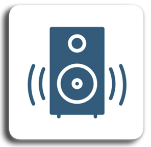

Nuevas Tecnologías en Educación Musical
Actividad 5
MusyQUIZ
App e icono

MusyQUIZ tiene como objetivo contribuir a parte de la evaluación final mediante la realización de un test de conocimientos acerca de los contenidos desarrollados en el tema. Servirá, por tanto, para agilizar la recogida de evidencias del aprendizaje por parte del profesorado ya que permite que éste obtenga directamente una nota final de cada alumno al ser enviada a una hoja de cálculo, así como opcionalmente para que los alumnos practiquen dejando registro de sus avances.
Descripción de la actividad
Llegado a este punto de la secuencia, se realizará un repaso en clase de todos los contenidos vistos a lo largo de las diferentes sesiones. En ese momento se permitirá a los alumnos tener acceso a sus dispositivos móviles (o los proporcionados por el centro) para instalar la app e interactuar con ella.
Una vez llegados al final de la secuencia didáctica, la app MusyQUIZ desarrollada específicamente para la misma permitirá que los alumnos desde sus teléfonos móviles o tablets puedan realizar bien una evaluación de conocimientos o comprobar su aprendizaje.
Requisitos
Para hacer uso de la app se requiere por parte del alumno acceso a un dispositivo móvil Android que permita la instalación de aplicaciones .APK desde fuentes no confiables. El fichero APK está disponible en este enlace: MusyQUIZ.apk
La mayoría de dispositivos Android, descargarán el fichero a su almacenamiento local y lanzarán su instalación o interrogarán al alumnado acerca de la posibilidad.
Alternativamente, en caso de tener cuenta en Thunkable se puede acceder a una versión en linea en: https://x.thunkable.com/projectPage/65f865896bf46fafdc11fca7
Nota: debido a un bug en Thunkable es posible que las animaciones no se visualicen de forma correcta en dispositivos reales.
Obra publicada con Licencia Creative Commons Reconocimiento Compartir igual 4.0